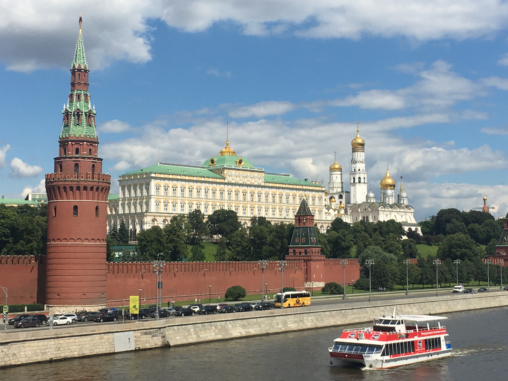
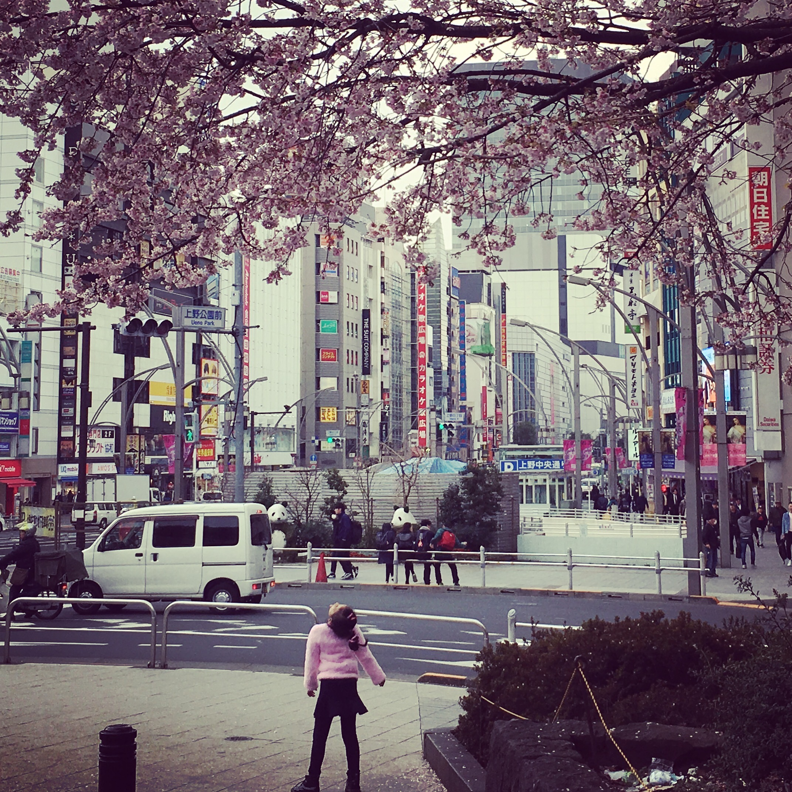
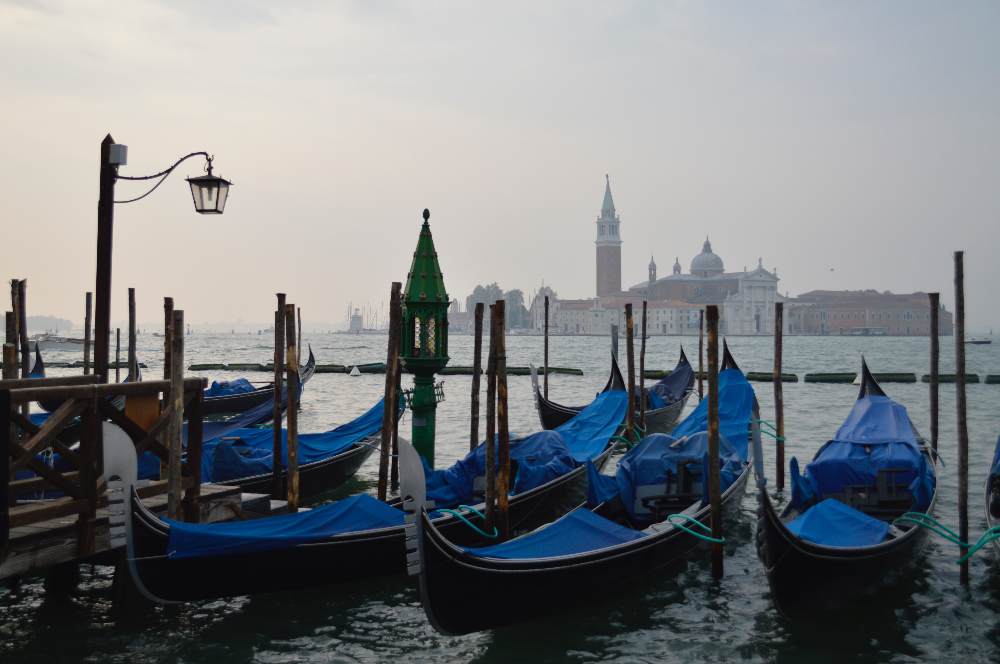

Anna Shamina
Nomad & Novice Developer
“Travel and change of place impart new vigor to the mind.” – Seneca
After some years of finance and rain in the City of London, I decided to follow the words of wisdom from Seneca and Mark Twain. Exploration was the theme of 2017. I doubt I would be at Le Wagon Milano, if not for that year of travelling. I still enjoy reading the Financial Times every morning... though I am getting equally addicted to Stackoverflow.com...
"Twenty years from now you will be more disappointed by the things you didn’t do than by the ones you did do.” – Mark Twain
My Favorite Places
|  |
The Moscow Kremlin and the Moskva river"The Moscow Kremlin is a fortified complex at the heart of Moscow, overlooking the Moskva River. It is the best known of the kremlins (Russian citadels) and includes five palaces, four cathedrals, and the enclosing Kremlin Wall with Kremlin towers." |
|  |
Tokyo, the Ueno park during the cherry blossom"Ueno Park occupies land once belonging to Kan'ei-ji, founded in 1625 in the "demon gate", the unlucky direction to the northeast of Edo Castle. Most of the temple buildings were destroyed in the Battle of Ueno in 1868. That year Ueno Hill became the property of the city of Tokyo." |
|  |
Venice, the gondolas and the Church of San Giorgio Maggiore"San Giorgio Maggiore is a 16th-century Benedictine church designed by Andrea Palladio. The church is a basilica in the classical renaissance style and its brilliant white marble gleams above the blue water of the lagoon and forms the focal point of the view from every part of the Riva degli Schiavoni." |